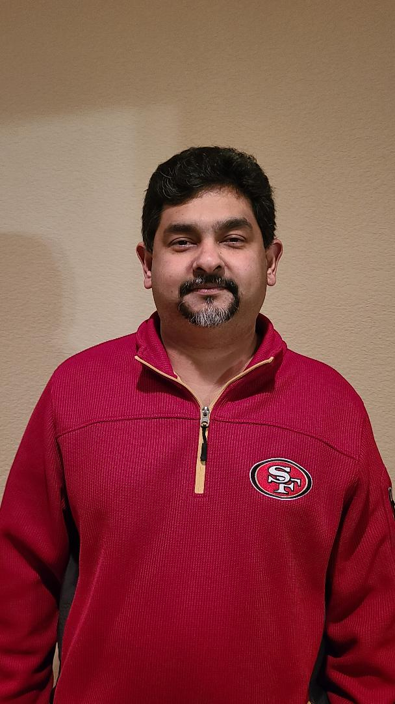

About Me
I was born in Fiji Islands. After my fathers death at age 12 I moved to Bay Area to be with my sister and her family. I was able to finish my grade school and start my associates at DeAnza College. Soon after that i got married and had kids. I was always interested in programming just did not have a chance to do it till now. I am currently attending the coding boot camp at UC Davis and am projected to finish the program in June 2021. I am enjoying furthering my knowledge in the IT world and hope to continue to do so upon completion.